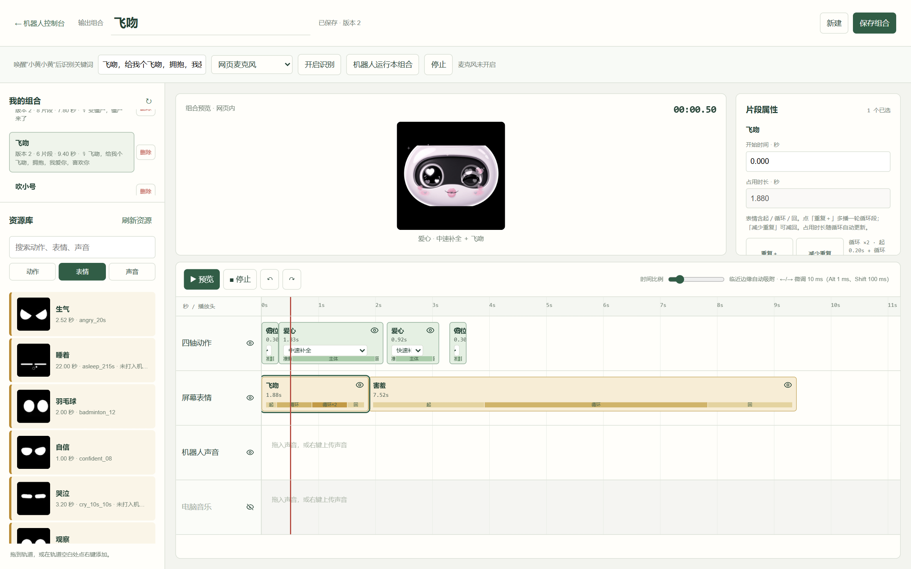

完整解压 → 双击 START.bat → 连接机器人 → 在网页上操作。
适用于 Windows 10/11、Intel/AMD 64 位电脑。包内已带 Python、依赖、手势与语音模型、动作、表情预览和声音素材，无需安装开发环境。建议 16 GB 内存，预留至少 6 GB 空间。
D:\Otto-Robot，不要在压缩包里直接运行。机器人需独立供电并运行现有固件，不用重新刷机。交接前，原电脑应停止动作并断开连接。
| 连接方式 | 操作 | 适用范围 |
|---|---|---|
| Wi-Fi | 电脑与机器人处于同一局域网。网页右上角选“Wi-Fi”，点击“连接机器人”。本包预填 http://10.240.103.49。 | 动作、表情和机身声音，完整展示优先。 |
| 蓝牙 BLE | 开启电脑蓝牙，将机器人放近；网页选“蓝牙 BLE”，点击“连接机器人”。广播名为 Otto-0E70，无需先手工配对。 | 动作与表情。不要求同一 Wi-Fi；机身声音仍需要 Wi-Fi。 |
设备 ID：14:C1:9F:30:0E:70。换网络后 IP 可能变化，在路由器设备列表或向项目负责人确认新 IP，再用记事本修改 config.local.json 中的 OTTO_DEVICE_URL，然后重启。不要填电脑自己的 IP。换 Wi-Fi 密码需另外配网，本包没有自动配网向导。
本地控制不需要互联网；但 Wi-Fi 控制需要电脑能够访问机器人的局域网地址。可在浏览器打开 http://10.240.103.49/api/status 检查，正常会看到设备状态 JSON。

退出顺序：停止动作 → 返回站姿 → 断开连接 → 关闭启动窗口。不要依赖关网页或断网停止板端连续动作，紧急情况断开舵机电源。
详细说明、完整手势映射和维护目录见 HANDOFF.md（可用记事本打开）。不要删除 runtime/、models/、voice-model/ 或 web/library/。本包不含完整刷机镜像，不需要为了启动控制台而刷机。